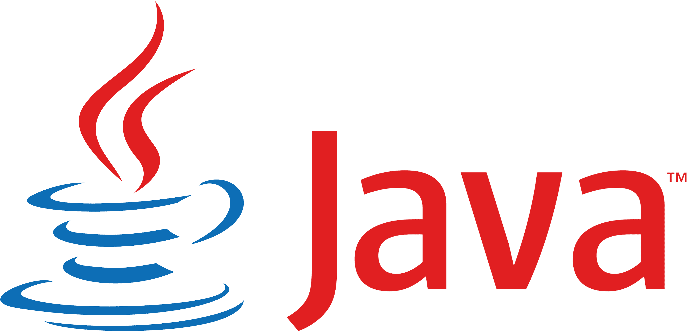
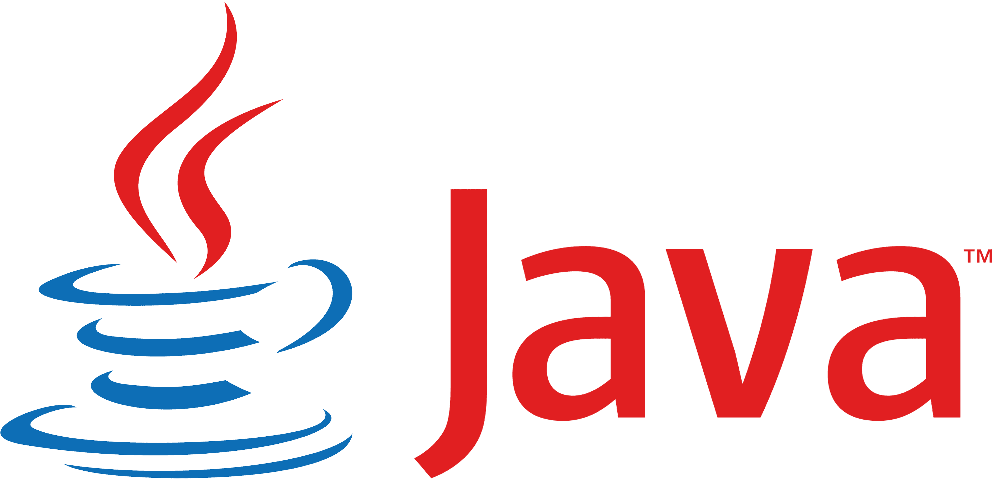
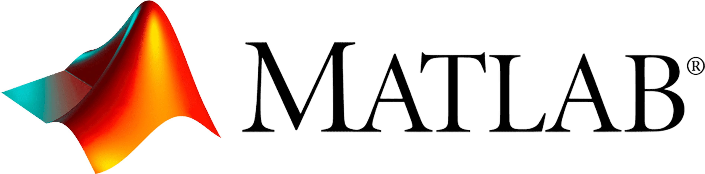
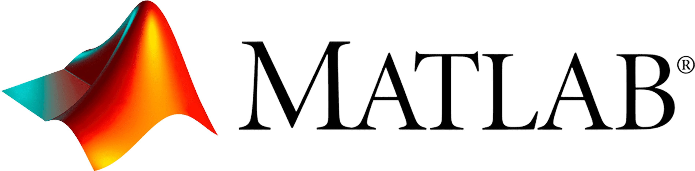

My Resume
Below is my current resume. While I tailor my resume for each application, this version serves as a general resume for computer science positions.

 



 



Below is my current resume. While I tailor my resume for each application, this version serves as a general resume for computer science positions.